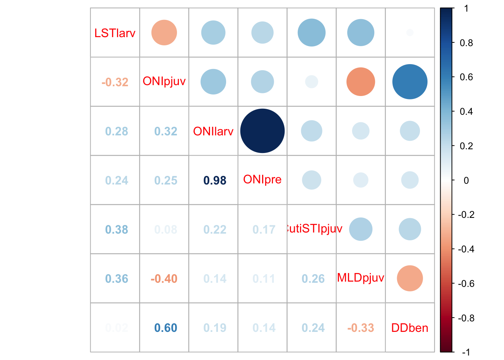
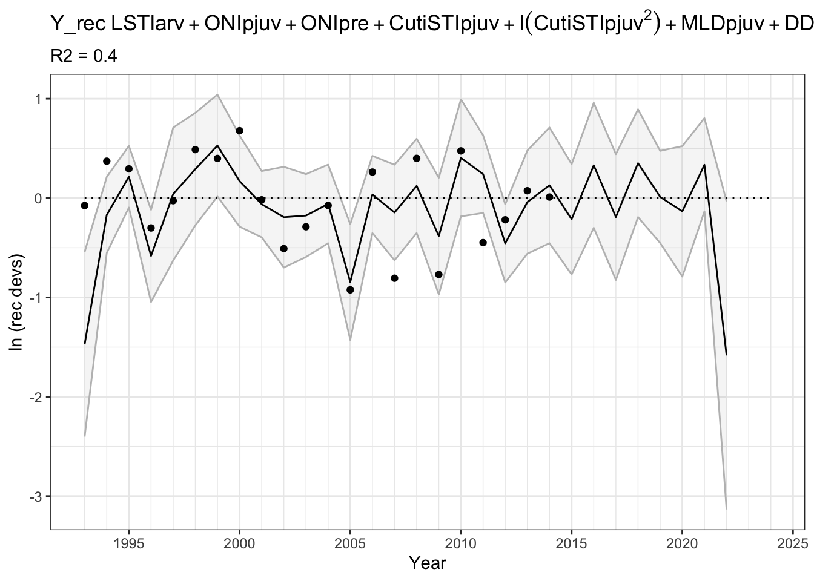

LinearModelsEnvPred
Background
The northern Yellowtail STAT has identified 3 primary ways that the incorporation and evaluation of environmental indices could be improved upon for the 2025 assessment cycle, these include:
Expand on non-linear relationships considered between recruitment deviations and environmental responses, specifically, evaluate the benefit of using GAMs in addition to quadratic terms.
Compare predictive capacity of models (using Leave-Future-Out cross validation) in addition to model fit.
Consider time-varying relationships (non-stationarity) between environmental conditions and recruitment deviations.
Fitting models to recrutitment deviations from the base model and refitting with an environmental predictor has inherent circularity. Identifying additional indices that can be environmentally informed would benefit the process of developing environmentally informed assessments. These could include indices of juvenile abundance, growth, or maturity.
Methods for index selection currently include fitting all possible model combintations. Issues of multicollinearity and model fitting are challenging across assessment types (i.e. both groundfish and salmon struggle with this). Evaluating additional approaches to deal with both multicollinearity and variable selection that also can deal with extremely limited time series would be beneficial. These can include regularization and machine learning methods.
These efforts are in addition to the work lead by Nick Tolmieri and Amanda Darby which
Generated a ecological profile for Yellowtail north based on life history information
Compared linear models including quadratic terms where aappropriate and omitting highly correlated predictors from the same model
Found the model with the best fit to the data using AIC and principles of parsimony
Evaluated model performance using jack knifing and predicting the last 4 years of data.
Code set up
First we set up the appropriate packages and references. File paths will be in reference to where the .qmd is saved
Next we set up the appropriate directories and read in the data.
We can build the functions including quadratic terms and omitting data that are missing years. We pull out DDegg just so we do not exceed the limit of 31 terms - pulling this out was somewhat arbitrary based on Amandas perliminary results.
Y_rec ~ X + DDpre + DDlarv + DDpjuv + DDben + Tcop + Tpart +
MLDpart + MLDlarv + MLDpjuv + CSTlarv + CSTpjuv + LSTlarv +
LSTpjuv + HCIlarv + HCIpjuv + ONIpre + ONIlarv + ONIpjuv +
PDOlarv + PDOpjuv + LUSI + CutiSTIpjuv + CutiTUMIpjuv + BeutiTUMIpjuv +
BeutiSTIpjuv + bakun_sti + header + I(LSTlarv^2) + I(ONIpre^2) +
I(ONIlarv^2) + I(CutiSTIpjuv^2)
<environment: 0x7fe660f39060>1. Evaluating multicolinearity and temporal stability of environmental predictors
Running a DFA
Before we fit models, lets first understand patterns of correlation and covariability across these environmnetal conditions. To start, lets look at a DFA. We find that across time series, there is a strong underlying trend that is predominantly loaded on by temperature time series and represents transport, mixed layer depth, and upwelling are not as well represented. The model struggles to converge with more than one latent trend.
Assessing the weight of support for each predictor as a function of time series length
Next we can look at the weight of evidence in support for each time series and consider how this might change based on the observed time period of recruitment deviations. For this approach we will dredge up to 5 covariates, we will consider quadratic terms, and omit combinations of highly correlated covariates. This is not to expressly identify “THE” model but as an exercise to identify the most important variables, and potential non-stationarities in that relationship. To fit these models we will use at least 10 years of data (1994 - 2004) and iteratively add in one year of data and refit the model set. Colors denote the over all aic weight across all models with that variable.
Two variables stand out, CUTI spring transition as a non-linear (quadratic) relationship and ONI during the preconditioning time period. Notably, the weight of evidence for a single time series really diminshes when when the model is fit to 1994 - 2011:2014 such that AIC is fairly distributed across time series.

If we try to fit a model that is highly parsimonious, by fitting only 1 covariate at a time in the same framework (or selecting the most parsimonious model) we get a different answer and find that Mixed layer depth during the larval lifestage is the most important. I find this result interesting because MLDlarv does not load onto our DFA significantly. Given all of this variability, its worth exploring these different models a bit more.

Assessing model selection based on AIC and principles of parsimony
Lets take a look at what the best models from Amanda and Nicks workflow looks like. If we assign the best model as the model with the lowest AIC we also identify the MLDlarv model. However, this model has an extremely low R^2 and also does not fit the most recent half of the time series.
Now what if we relax teh requirement of having the most parsimonious model and instead focus on the best fit across the entire time series, we find the best model is CUTI STI with a quadratic term.

We can also look at a table of the best models. It becomes very apparent the top models include CUTI STI as a non-linear term, and the models that include it have much better R^2 values.
| CutiSTIpjuv | I.CutiSTIpjuv.2. | DDpre | HCIlarv | MLDlarv | Tcop | R2 | AICc | delta |
|---|---|---|---|---|---|---|---|---|
| -0.22 | -0.30 | NA | NA | NA | NA | 0.37 | 27.12 | 0.00 |
| -0.23 | -0.28 | NA | NA | NA | 0.21 | 0.44 | 28.16 | 1.04 |
| NA | NA | NA | NA | 0.16 | NA | 0.21 | 28.79 | 1.67 |
| -0.23 | -0.27 | 0 | NA | NA | NA | 0.42 | 28.90 | 1.78 |
| -0.20 | -0.24 | NA | NA | 0.09 | NA | 0.41 | 28.99 | 1.87 |
| -0.26 | -0.28 | NA | -0.32 | NA | NA | 0.41 | 29.09 | 1.97 |
Considering correlation across covariates with the strongest weights of evidence
Using the first framework we look at, we can take the entire time series through 2014, and look at what predictors have the most evidence of support. Lets say that we only want to look at predictors that have at least 15% of the model support for the full time series. Looking at the data this way, the covariates that have the best weight of evidence are: long shore transport (larv), ONI (pelagic juveniles, larval, and preconditioning), CUTI STI, degree days benthic juveniles, and mixed layer depth larval.
| last_year | variable | value | indicator |
|---|---|---|---|
| 2014 | MLDlarv | 0.2060605 | MLDla |
Thinking about the variables with the most weight of evidence, we can test out a backwards selection technique. Instead of AIC (which is prone to overfitting and we already know these variables have AIC support) we can use VIF to try and avoid multicollinerity. Lets start with the model that is saturated with the variables that have strong AIC support.
LSTlarv ONIpjuv ONIlarv ONIpre CutiSTIpjuv MLDpjuv
1.88 2.91 32.64 28.47 1.36 1.63
DDben
1.88 
ONIlarv is correlated with a bunch of covariates. Lets ditch it.
LSTlarv ONIpjuv ONIpre CutiSTIpjuv MLDpjuv DDben
1.62 2.26 1.25 1.35 1.47 1.88 
And finally, what does this model look like? We get a slightly worse fit than just using upwelling, and we still struggle with overestimating recruitment when it is low (the negative values)

We don’t want to use DFA latent trends as predictors because they lack transparency and interpretability - but lets look at it…it is GARBAGE. Why? Likely because it is dominated by temperature and not influenced by the transport, upwelling and mixed layer depth variables that provide better fits. Therefore, even using a DFA would require some degree of covariate exploration for any explanatory power or predictive ability.

The fact that the correlation between CUTI STI and yellowtail rec devs changes in 2010/2011 is suspicious given it is modeled from ROMS data and ROMS models also changed over that period. To evaluate whether this is this may be the cause of the change we looked at the time series of CUTI STI along with comparing it to Bakun derived STI to see if Bakun indices offer a reasonable alternative that may not be subject to changes in ROMS around 2010. CUTI and Bakun STI are only moderately correlated (0.52) and we don’t find that there are significant differences in CUTI STI before and after 2010. Mike Jacox confirmed that there the wind data that CUTI is derived from should be stable from ROMs from at least 2000 onward. He also said he may have CUTI from GLORYs somewhere on his computer (need to follow up).
From Kiva: “I included all years of”main” recruitment deviations. I would say the information quality goes down around 2010-2011, but you could use anything for playing around.” This may partially explain the lack of consistency after 2010/2011
CutiSTIpjuv bakun_sti
CutiSTIpjuv 1.0000000 0.5243211
bakun_sti 0.5243211 1.0000000
Call:
lm(formula = CutiSTIpjuv ~ ROMS, data = up)
Residuals:
Min 1Q Median 3Q Max
-1.6975 -0.7755 0.1243 0.6157 2.0076
Coefficients:
Estimate Std. Error t value Pr(>|t|)
(Intercept) -0.06597 0.21074 -0.313 0.756
ROMSlate 0.19242 0.35991 0.535 0.596
Residual standard error: 1.011 on 33 degrees of freedom
Multiple R-squared: 0.008587, Adjusted R-squared: -0.02146
F-statistic: 0.2858 on 1 and 33 DF, p-value: 0.5965Univariate GAMs
Here I fit univariate GAMs to evaluate the differences in AIC, Leave-One-Out Cross Validation, and Leave-Future-Out Cross Validation. The goal of this preliminary analysis before fitting multivariate GAMs was to examine more closely how different variables perform with particular attention to fits versus predictive capacity. Plotting model fits with a single variable is usedful for understanding which patterns in the data are explained by each variable.
First, lets look at which models have the most support based on a) AIC, b) LOO-CV, and c) LFO-CV.
| var | RMSE_LOO | RMSE_LFO | AIC_LOO | rsq_LOO | rsq_LFO | dev.ex_LOO | dev.ex_LFO |
|---|---|---|---|---|---|---|---|
| CutiSTIpjuv | 0.432 | 0.389 | 24.94231 | 0.28 | 0.39 | 0.3494 | 0.4616 |
| LSTlarv | 0.433 | 0.210 | 27.62118 | 0.18 | 0.15 | 0.2562 | 0.2382 |
| MLDlarv | 0.436 | 0.328 | 27.37569 | 0.16 | 0.23 | 0.2052 | 0.3036 |
| DDpre | 0.460 | 0.210 | 29.95140 | 0.05 | 0.03 | 0.1015 | 0.0931 |
| Tcop | 0.462 | 0.245 | 30.18503 | 0.04 | 0.04 | 0.0915 | 0.0963 |
| MLDpart | 0.473 | 0.293 | 28.64629 | 0.11 | 0.13 | 0.1556 | 0.1874 |
| DDegg | 0.479 | 0.266 | 31.09455 | 0.00 | 0.00 | 0.0512 | 0.0636 |
| X | 0.482 | 0.295 | 30.19527 | 0.06 | 0.04 | 0.1178 | 0.1013 |
| ONIpjuv | 0.483 | 0.309 | 30.48603 | 0.03 | 0.06 | 0.0783 | 0.1153 |
| DDlarv | 0.484 | 0.218 | 31.01117 | 0.01 | -0.02 | 0.0550 | 0.0456 |
| PDOpjuv | 0.486 | 0.349 | 31.75613 | -0.03 | 0.01 | 0.0209 | 0.0697 |
| Tpart | 0.491 | 0.220 | 31.30430 | -0.01 | -0.03 | 0.0417 | 0.0331 |
| HCIlarv | 0.493 | 0.217 | 31.45804 | -0.02 | -0.04 | 0.0347 | 0.0240 |
| CutiTUMIpjuv | 0.493 | 0.262 | 32.18672 | -0.05 | -0.06 | 0.0006 | 0.0072 |
| DDben | 0.498 | 0.238 | 31.87787 | -0.04 | -0.05 | 0.0152 | 0.0128 |
| ONIpre | 0.499 | 0.463 | 29.86055 | 0.09 | 0.23 | 0.1665 | 0.3226 |
| dfa | 0.500 | 0.222 | 31.73622 | -0.03 | -0.05 | 0.0218 | 0.0124 |
| LSTpjuv | 0.501 | 0.261 | 32.18613 | -0.05 | -0.06 | 0.0006 | 0.0069 |
| BeutiTUMIpjuv | 0.502 | 0.231 | 31.98426 | -0.04 | -0.06 | 0.0102 | 0.0058 |
| PDOlarv | 0.504 | 0.203 | 31.25609 | -0.01 | -0.04 | 0.0439 | 0.0272 |
| BeutiSTIpjuv | 0.506 | 0.275 | 31.20045 | 0.02 | 0.05 | 0.0943 | 0.1483 |
| DDpjuv | 0.516 | 0.237 | 32.11044 | -0.05 | -0.07 | 0.0042 | 0.0005 |
| HCIpjuv | 0.516 | 0.253 | 31.86014 | -0.02 | -0.05 | 0.0513 | 0.0224 |
| CSTlarv | 0.526 | 0.248 | 32.19784 | -0.05 | -0.07 | 0.0001 | 0.0006 |
| MLDpjuv | 0.531 | 0.240 | 32.13528 | -0.05 | -0.06 | 0.0030 | 0.0026 |
| CSTpjuv | 0.550 | 0.581 | 31.94132 | -0.03 | 0.12 | 0.0406 | 0.2202 |
| var | RMSE_LOO | RMSE_LFO | AIC_LOO | rsq_LOO | rsq_LFO | dev.ex_LOO | dev.ex_LFO |
|---|---|---|---|---|---|---|---|
| PDOlarv | 0.504 | 0.203 | 31.25609 | -0.01 | -0.04 | 0.0439 | 0.0272 |
| LSTlarv | 0.433 | 0.210 | 27.62118 | 0.18 | 0.15 | 0.2562 | 0.2382 |
| DDpre | 0.460 | 0.210 | 29.95140 | 0.05 | 0.03 | 0.1015 | 0.0931 |
| HCIlarv | 0.493 | 0.217 | 31.45804 | -0.02 | -0.04 | 0.0347 | 0.0240 |
| DDlarv | 0.484 | 0.218 | 31.01117 | 0.01 | -0.02 | 0.0550 | 0.0456 |
| Tpart | 0.491 | 0.220 | 31.30430 | -0.01 | -0.03 | 0.0417 | 0.0331 |
| dfa | 0.500 | 0.222 | 31.73622 | -0.03 | -0.05 | 0.0218 | 0.0124 |
| BeutiTUMIpjuv | 0.502 | 0.231 | 31.98426 | -0.04 | -0.06 | 0.0102 | 0.0058 |
| DDpjuv | 0.516 | 0.237 | 32.11044 | -0.05 | -0.07 | 0.0042 | 0.0005 |
| DDben | 0.498 | 0.238 | 31.87787 | -0.04 | -0.05 | 0.0152 | 0.0128 |
| MLDpjuv | 0.531 | 0.240 | 32.13528 | -0.05 | -0.06 | 0.0030 | 0.0026 |
| Tcop | 0.462 | 0.245 | 30.18503 | 0.04 | 0.04 | 0.0915 | 0.0963 |
| CSTlarv | 0.526 | 0.248 | 32.19784 | -0.05 | -0.07 | 0.0001 | 0.0006 |
| HCIpjuv | 0.516 | 0.253 | 31.86014 | -0.02 | -0.05 | 0.0513 | 0.0224 |
| LSTpjuv | 0.501 | 0.261 | 32.18613 | -0.05 | -0.06 | 0.0006 | 0.0069 |
| CutiTUMIpjuv | 0.493 | 0.262 | 32.18672 | -0.05 | -0.06 | 0.0006 | 0.0072 |
| DDegg | 0.479 | 0.266 | 31.09455 | 0.00 | 0.00 | 0.0512 | 0.0636 |
| BeutiSTIpjuv | 0.506 | 0.275 | 31.20045 | 0.02 | 0.05 | 0.0943 | 0.1483 |
| MLDpart | 0.473 | 0.293 | 28.64629 | 0.11 | 0.13 | 0.1556 | 0.1874 |
| X | 0.482 | 0.295 | 30.19527 | 0.06 | 0.04 | 0.1178 | 0.1013 |
| ONIpjuv | 0.483 | 0.309 | 30.48603 | 0.03 | 0.06 | 0.0783 | 0.1153 |
| MLDlarv | 0.436 | 0.328 | 27.37569 | 0.16 | 0.23 | 0.2052 | 0.3036 |
| PDOpjuv | 0.486 | 0.349 | 31.75613 | -0.03 | 0.01 | 0.0209 | 0.0697 |
| CutiSTIpjuv | 0.432 | 0.389 | 24.94231 | 0.28 | 0.39 | 0.3494 | 0.4616 |
| ONIpre | 0.499 | 0.463 | 29.86055 | 0.09 | 0.23 | 0.1665 | 0.3226 |
| CSTpjuv | 0.550 | 0.581 | 31.94132 | -0.03 | 0.12 | 0.0406 | 0.2202 |
We find that the models supported with AIC and LOO-CV are very consistent and agree with the linear models, but LFO-CV is a bit of a mess. Lets look at the model fits for the full time series:
Looking at this, it becomes pretty obvious that the variables with the most support are not necessarily the ones that predict whether recruitment will be above or below average in the last few years, but rather the ones that just go in the middle of a bunch of points that are centered close to the mean. No variable does a great job predicting 2010, but CUTI STI, BEUTI STI, and ONI pre at least capture some patterns in below average.
Next steps
Fit GAMs with temporally stable relationships (status: done)
Perform model selection using LFO-CV (status: done)
Evaluate marginal improvement of RMSE for multivariate GAMs and LMs (status: done)
Evaluate non-stationary relationships between recruitment deviations and the environmental predictors with the most support to assess non-stationarity (status: in development)
Develop a method for a rolling window LFO-CV to address and test challenged outlined above (status: in development)
Fit models using regularization techniques (status: to do)
Fit models using machine learning techniques (status: to do, low priority)